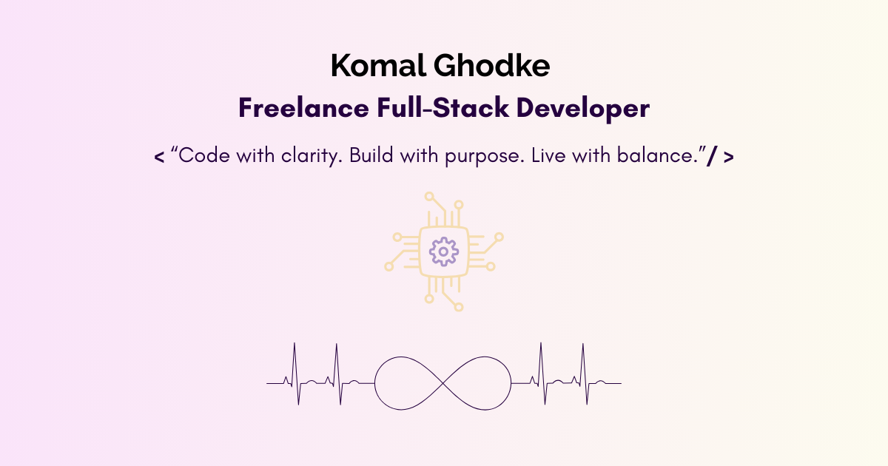

Crafting Scalable Platforms with Purpose
I’m a full-stack developer with 3.5+ years of experience in enterprise software and freelance consulting. My work blends robust engineering with thoughtful design—delivering secure, scalable platforms for service-based businesses.
Whether it’s building Java-based connectors for global clients or launching a wellness platform with AWS infrastructure, I bring clarity, precision, and a deep understanding of digital architecture.
Professional Experience
- Persistent Systems (2021–2024): Delivered 50+ Java connectors, integrated AWS SDK & Microsoft Graph APIs, authored technical documentation, and maintained 90%+ test coverage.
- Freelance Developer (2025–Present): Engineered a full-stack wellness platform with ReactJS, Spring Boot, SMTP inbox automation, SEO optimization, and AWS deployment setup.
Entrepreneurship Beyond Code
As a Government Certified Yoga Instructor (YCB, Ministry of AYUSH, Govt. of India), I lead a wellness initiative focused on holistic health and mindful living. This dual path reflects my commitment to both digital innovation and personal well-being.
Technical Highlights
Core Development
- Java, Spring Boot, Microservices
- RESTful APIs, JPA, MySQL
- ReactJS, Redux, Axios
Cloud & Integration
- AWS: EC2, S3, RDS, CloudFront, Route 53
- SMTP, OAuth2, JWT
- API Integration: AWS SDK, Microsoft Graph
Testing & Documentation
- Junit, Mockito, Jacoco Coverage
- Feasibility Docs, BRD, FAQs
- CI/CD, Git, Jenkins
Freelance Services
I help startups, wellness brands, and service-based businesses build secure, scalable platforms tailored to their needs.
- üß± Full-Stack Web Development (ReactJS + Spring Boot)
- üîê Secure Auth Systems (JWT, OAuth2, SMTP)
- üì¶ API Integration (AWS SDK, Microsoft Graph, RESTful APIs)
- ☁️ Cloud Deployment (S3, EC2, RDS, CloudFront, Route 53)
- üìò Technical Documentation (Feasibility, Architecture, FAQs)
- üéØ SEO & Legal Compliance Setup
Project Costing
Each project is customized based on scope, complexity, integrations, and timeline. Below is a transparent estimate range based on past work:
- ReactJS Web Application: ₹18,000 – ₹36,000
Basic UI to advanced frontend with routing, SEO, and responsive design
- Spring Boot API Development: ₹12,000 – ₹32,000
From CRUD APIs to secure, scalable backend systems with integrations
- Full-Stack Platform (Frontend + Backend + AWS): ₹2,50,000 – ₹5,20,000
Includes architecture, legal pages, SEO, admin inbox, deployment, and branding
Note: Pricing may vary based on project goals, feature depth, and delivery timeline. Custom quotes are provided after a discovery call.
“Code with clarity. Build with purpose. Live with balance.”
Let’s Build Together
I’m available for freelance projects, technical consulting, and platform development. Whether you're launching a new service or scaling an existing one, I bring structure, strategy, and execution.
Get in Touch
